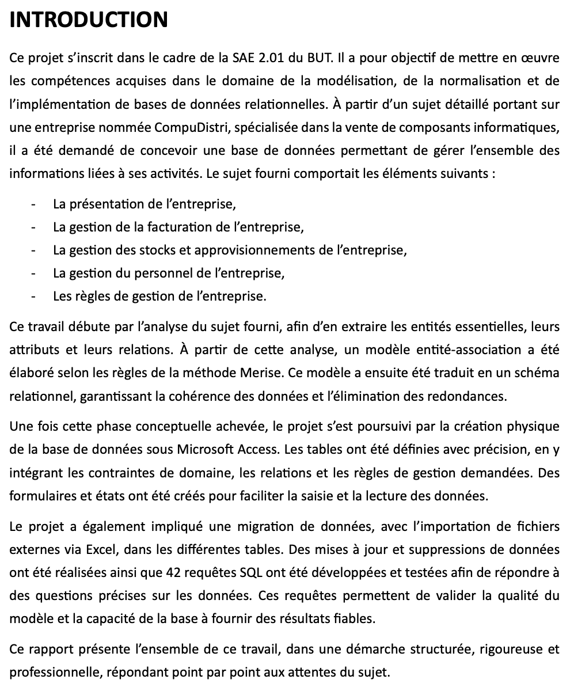
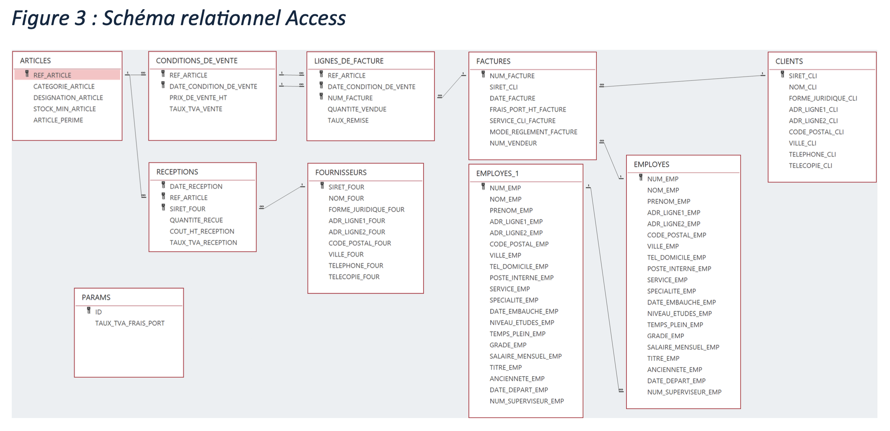
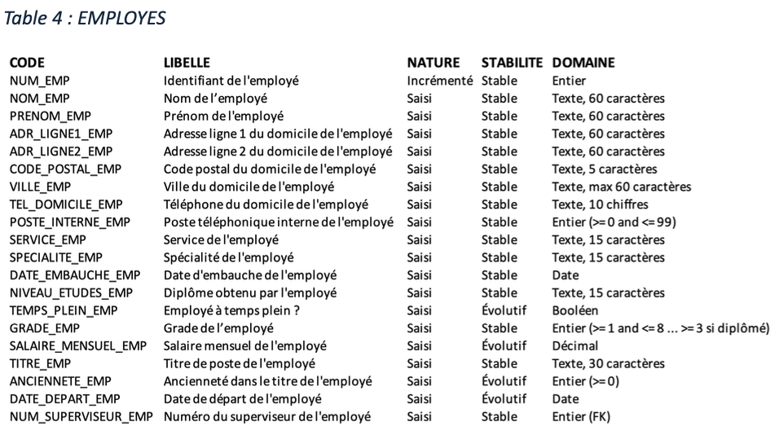
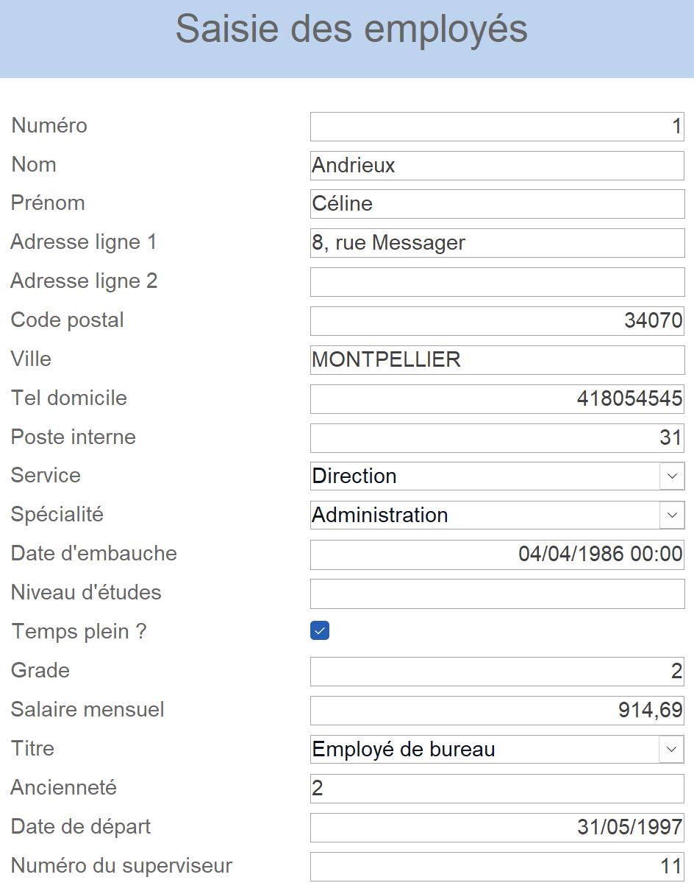
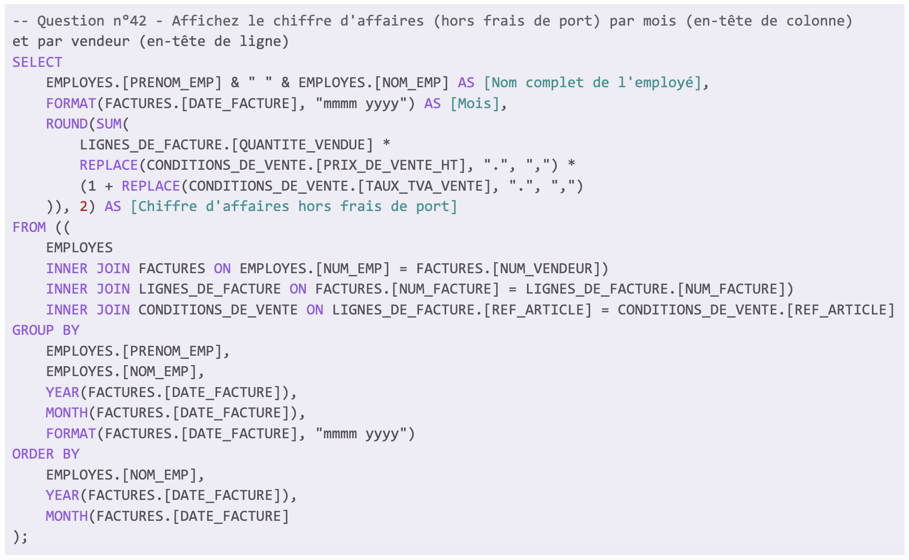

Cette capture d’écran montre l’introduction du rapport rédigée dans le cadre de la SAÉ. Elle présente le contexte global du projet, le cahier des charges et les objectifs attendus : modéliser et implémenter une base de données relationnelle pour une entreprise fictive spécialisée dans la vente de composants informatiques.
J’ai rédigé ce texte en veillant à structurer l’information de manière logique et progressive : d’abord la présentation de l’entreprise, puis la description des besoins, et enfin la méthodologie adoptée (analyse du sujet, conception du modèle Merise, implémentation sous Access).
Cette preuve démontre que j’ai acquis la compétence AC 11.01, car j’ai su interpréter le besoin du commanditaire permettant la suite du projet. Elle valide également la compétence AC 11.02, car j’ai utilisé une présentation structurée et lisible avec des listes à puces et des paragraphes aérés, respectant les bonnes pratiques de rédaction.
Cette capture d’écran illustre le schéma relationnel de la base de données réalisée dans Access pour le projet. On y observe une structuration complète des données avec des tables principales (ARTICLES, FACTURES, CLIENTS, FOURNISSEURS, EMPLOYES, etc.) et des relations entre elles (liens un-à-plusieurs, clés primaires et étrangères).
J’ai conçu ce schéma pour représenter les entités et leurs relations de manière cohérente et normalisée, en veillant à respecter l’intégrité référentielle et à éviter les redondances. Cette représentation graphique m’a permis de valider la structure de la base de données avant de passer à l’implémentation.
Cette preuve démontre que j’ai acquis la compétence AC 11.04, car j’ai su analyser, modéliser et interpréter la structure des données pour garantir la qualité et la fiabilité des informations stockées dans la base de données.
Cette capture d’écran montre la table EMPLOYES de la base de données, avec les champs, libellés, types de données et contraintes définis. On y voit que chaque champ est précisé (ex. NUM_EMP comme identifiant, NOM_EMP et PRENOM_EMP pour l’identité), ainsi que sa nature (saisi, incrémenté), sa stabilité (stable, évolutif) et son domaine (entier, texte, date, etc.).
J’ai structuré cette table avec soin pour garantir la cohérence des données et la conformité aux règles de gestion définies dans le sujet. J’ai aussi précisé les contraintes (ex. nombre de caractères, bornes pour les entiers) afin d’éviter les erreurs de saisie et de valider les données.
Cette preuve démontre que j’ai acquis la compétence AC 11.04, car j’ai su définir une structure de données adaptée aux besoins fonctionnels du projet, en tenant compte des contraintes de gestion et des types de données.
Cette capture d’écran montre le formulaire de saisie des employés conçu dans la base de données Access pour gérer les informations du personnel. Chaque champ correspond à une donnée précise (nom, prénom, adresse, code postal, ville, service, spécialité, date d’embauche, etc.) afin de permettre une saisie complète des données des employés de l'entreprise.
J’ai conçu ce formulaire pour faciliter la saisie et la validation des données avec une interface claire et structurée. Les champs obligatoires et les formats de données (ex. date d’embauche, salaire mensuel, numéro du superviseur) ont été soigneusement définis pour assurer la cohérence des informations et éviter les erreurs de saisie.
Cette preuve démontre que j’ai acquis la compétence AC 11.01, car j’ai su concevoir un outil de saisie (formulaire) pour répondre aux besoins du projet et faciliter l’intégration des données dans la base de données. Elle montre également que j’ai acquis la compétence AC 11.04, car j’ai compris l’importance d’adapter les interfaces face aux exigences, tout en respectant la structure et la cohérence des données.
Cette capture d’écran illustre une requête SQL plutôt complexe développée dans Access pour répondre à la question n°42 du projet. Elle permet de calculer le chiffre d’affaires (hors frais de port) par mois et par vendeur en concaténant le prénom et le nom de l’employé, et en utilisant des fonctions SQL telles que ROUND(), SUM(), FORMAT() et REPLACE() pour gérer les calculs et les formats.
J’ai rédigé cette requête en respectant les formalismes de notation (indentation, alias, mise en forme des noms de colonnes) et en appliquant une structure logique claire qui facilite la relecture. J’ai également pris en compte les besoins du projet en utilisant des jointures internes pour relier les tables entre elles.
Cette preuve démontre que j’ai acquis la compétence AC 11.02, car j’ai respecté les bonnes pratiques de présentation du code SQL. Elle prouve aussi que j’ai acquis la compétence AC 11.03, car j’ai utilisé correctement la syntaxe SQL pour effectuer des calculs et des agrégations de données. Elle valide également la compétence AC 11.06, car ce projet m’a permis de prendre conscience de l’intérêt de la programmation pour automatiser les traitements.
Access / SQL
Dans cette SAÉ, j’ai occupé la posture d’un gestionnaire de base de données. Mon rôle était de concevoir et d’implémenter une base relationnelle à partir d’un cahier des charges détaillant les besoins d’un client fictif. Ce travail m’a permis de comprendre les étapes clés de la modélisation à l’alimentation d’une base réelle.
J’ai mobilisé les ressources reporting et datavisualisation (R2.01), bases de données relationnelles 2 (R2.02) et bases de la programmation 2 (R2.03) pour structurer ma démarche de conception, implémenter des tables, assurer l’intégrité des données et documenter l’ensemble du projet.
J’ai réalisé l’analyse des besoins, produit un MCD (Modèle Conceptuel de Données), construit le schéma relationnel, puis implémenté la base dans Access. J’ai inséré les jeux de données fournis, testé la cohérence des contraintes, ajouté des requêtes SQL pour des extractions ciblées, et rédigé une documentation technique.
J’ai appris à interpréter un besoin métier pour en faire une structure de données exploitable, à utiliser les outils de modélisation avec rigueur, à garantir la cohérence et la qualité des données, et à produire une base de données fonctionnelle et bien structurée dans un contexte professionnel.
Compétences développées :
— AC 11.01 |Correctement interpréter et prendre en compte le besoin du commanditaire ou du client
J’ai su analyser le sujet et identifier les besoins pour modéliser et implémenter la base de données en respectant les exigences.
— AC 11.02 |Respecter les formalismes de notation
J’ai structuré les schémas relationnels et rédigé les requêtes SQL en respectant les conventions de notation et en veillant à la clarté et à la lisibilité du code.
— AC 11.03 |Connaître la syntaxe des langages et savoir l’utiliser
J’ai mobilisé efficacement la syntaxe SQL pour créer des requêtes afin d’obtenir de bons résultats.
— AC 11.04 |Mesurer l’importance de maîtriser la structure des données à exploiter
J’ai conçu et validé la structure de la base de données pour garantir la cohérence, la qualité et la fiabilité des informations.
— AC 11.06 |Prendre conscience de l’intérêt de la programmation
J’ai compris que la programmation (SQL) permet d’automatiser les traitements, pour permettre une bonne efficacité du projet.
NB : L’AC 11.05 (Comprendre les structures algorithmiques de base et leur contexte d’usage) n’a pas été mobilisé dans ce projet.